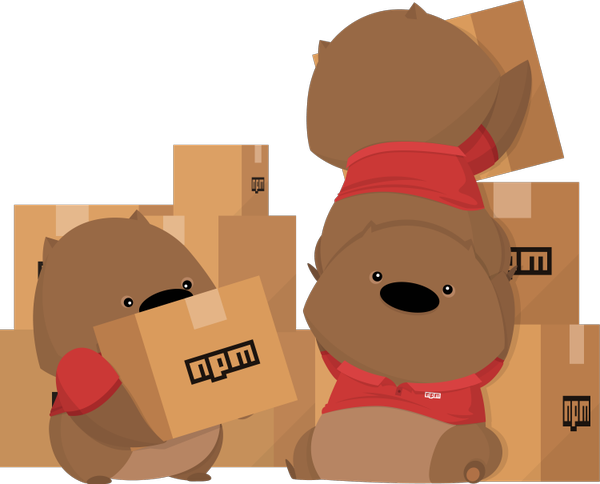

CO886: Software Engineering
Continuous development process
Tomas Petricek
email: t.petricek@kent.ac.uk
twitter: @tomaspetricek
office: S129A
{kind=link}
Modern software development challenges
Modern software development challenges
Context of modern software development
You can update web application instantly
You rarely have full control of all code you use
Development of a system is never done
Modern tools have complex multi-layer structure

Can you fix mistakes after product "release"?
Windows 95
Discard all your floppies if you notice early
Tell customers to return to the shop for a fix
Facebook, modern start-ups and others
Do multiple "releases" per day
Monitoring to avoid big failures
Small issues can be corrected in minutes

Do you control all the code your system runs?
Leftpad fiasco
11 line helper removed from NPM, breaking thousands of packages the whole world uses

How complex is your infrastructure?
UNIX on PDP-11 (circa 1970)
You can read all code the system runs
Tool is just a C file that you compile & run
Modern JavaScript
web development
Babel to compile new JavaScript to JavaScript
NPM to find packages
for everything you need
WebPack to combine source files and optimize
eXtreme Programming (2000s)
What is extreme programming
- Reaction to the new situation
- Collection of ideas, some old
- Nobody uses the name anymore
Tools and practices of XP
- Feedback - tests, pair programming, code reviews
- Continuous process - frequent small releases
- Agreement - coding styles, reasonable pace
The Joel Test: 12 Steps to Better Code (2000)
"If you get these 12 things right, you’ll have a disciplined team that can consistently deliver" (selection)
- Do you use source control?
- Can you make a build in one step?
- Do you make daily builds?
- Do you have a bug database?
- Do you have an up-to-date schedule?
- Do you have a spec?
- Do you do hallway usability testing?
Continuous integration
Ensuring your project is always in a good state
Your master branch builds reproducibly
Everything also builds on a clean machine
All your tests run automatically and pass
Continuous integration tools help with this!
Modern project infrastructure
Anatomy of a modern JavaScript project

Code and tests - your actual code such as
test, bot.js and index.html
Dependency management - NPM package info package.json
and version lock file yarn.lock
Build configuration - build scripts in package.json and
Webpack server and build config webpack.config.js
Continuous integration - tool configuration .travis.yml and
related commands in package.json
Anatomy of a modern JavaScript project
What really matters from the previous slide
Code and tests - writing and running tests
Dependency management - getting versions right
Build configuration - build and run with one command
Continuous integration - ensure reproducibility
Dependency management
Package dependencies
- Public repository such as NPM
- Version
1.0.0major, minor, revision - Want exact version? Latest revision?
Why is choosing versions hard
- Packages depend on other packages
- Transitive dependencies can change
- Packages can have conflicting requirements

Solving version hell with lock files and the Yarn for JavaScript
Give your dependencies
Things you directly need

Solving version hell with lock files and the Yarn for JavaScript
Give your dependencies
Things you directly need
Auto-generate lock file
Exact versions including transitive dependencies
Build configuration

Build with one command
- Typically pre-processing, compilation, post-processing
- Also dev and testing
Makefilein UNIX world
Building in JavaScript world
- Specified in the
scriptssection inpackage.json - Invoked using
yarn build,yarn testetc.
Rapid feedback during development

Forms of feedback when coding
- Syntax and type errors (milliseconds)
- Reload when code changes (seconds)
- Run tests when code changes (minutes)
Webpack and Webpack dev server
- Orchestrates various tools of build process
- Automatically reload modified parts of code in browser
Demo: Building and running sample project
Testing
How and why of unit testing

Tests for ensuring quality
- Unit tests to prevent regressions
- Write tests after you write code
- Continuous integration to run tests
Tests as a feedback mechanism
- Write tests before you write code
- Tests are a lightweight specification
- Command line or automatic background runners
1: 2: 3: 4: 5: 6: 7: 8: 9: 10: 11: 12: 13: 14: 15: |
|
Writing JavaScript tests with Mocha
You describe logic with tests written using it notation
Run tests from terminal using
the mocha tool
Beyond simple tests
Unit testing and general testing concerns
Unit tests are just one, easy to automate kind
How to structure code to make testing easy?
How to test not just functions, but user interfaces
Property testing to specify more than one case
Continuous integration
Continuous integration

What you need to use CI
- Automatic reproducible build
- Package management, tests
- Service to run your builds!
Continuous integration servers
- Build in a hosted cloud or your own servers
- Many options: Travis, Jenkins, TeamCity, AppVeyor
- Travis CI is free with nice GitHub support

Continuous integration support on GitHub
Runs build and tests every time you git push
Runs build and tests for every pull request
Shows warning when
PR build fails
Demo: Testing locally and using CI
Beyond simple CI
Device testing
for mobile applications
Continuous deployment to directly release new version of the product
Summary
Continuous development process
Changing context of software development
Release frequency and system complexity
Extreme programming: feedback and continuous process
Modern (JavaScript) project infrastructure
One command build to run, test and build
Dependency management, versioning and lock files
Testing and continuous integration tools
Tests for ensuring quality and tests for feedback
Running build automatically with CI systems
CO886: Continuous development process
What you should remember from this lecture
- What challenges is continuous process solving
- Reproducible builds and dependency management
- Why use tests and continuous integration tools
Tomas Petricek
t.petricek@kent.ac.uk | @tomaspetricek
References
Papers and articles
- Joel Spolsky (2000). The Joel Test: 12 Steps to Better Code
- Chris Williams (2016). How one developer just broke Node, Babel and thousands of projects in 11 lines of JavaScript
Libraries and tools